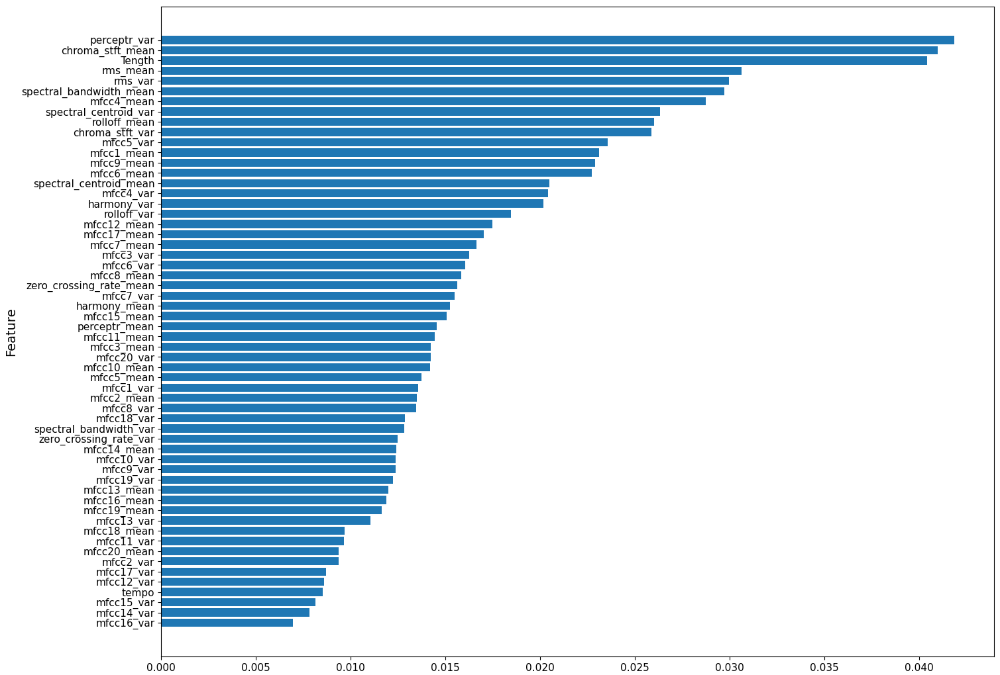
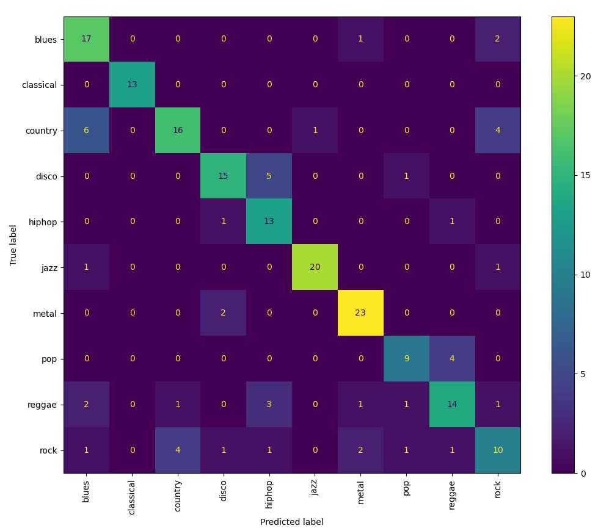
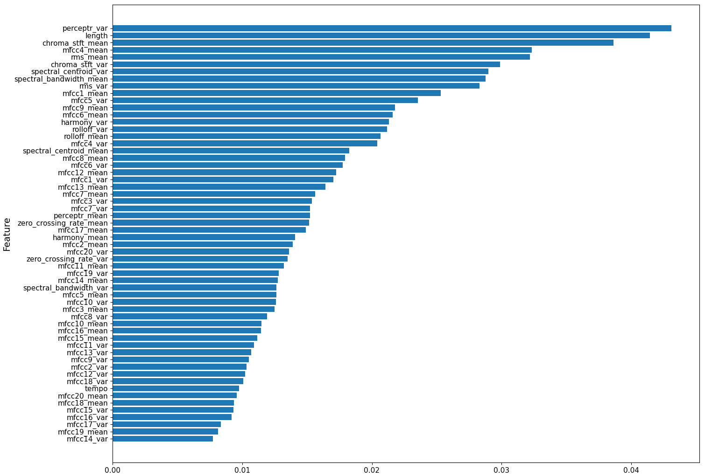
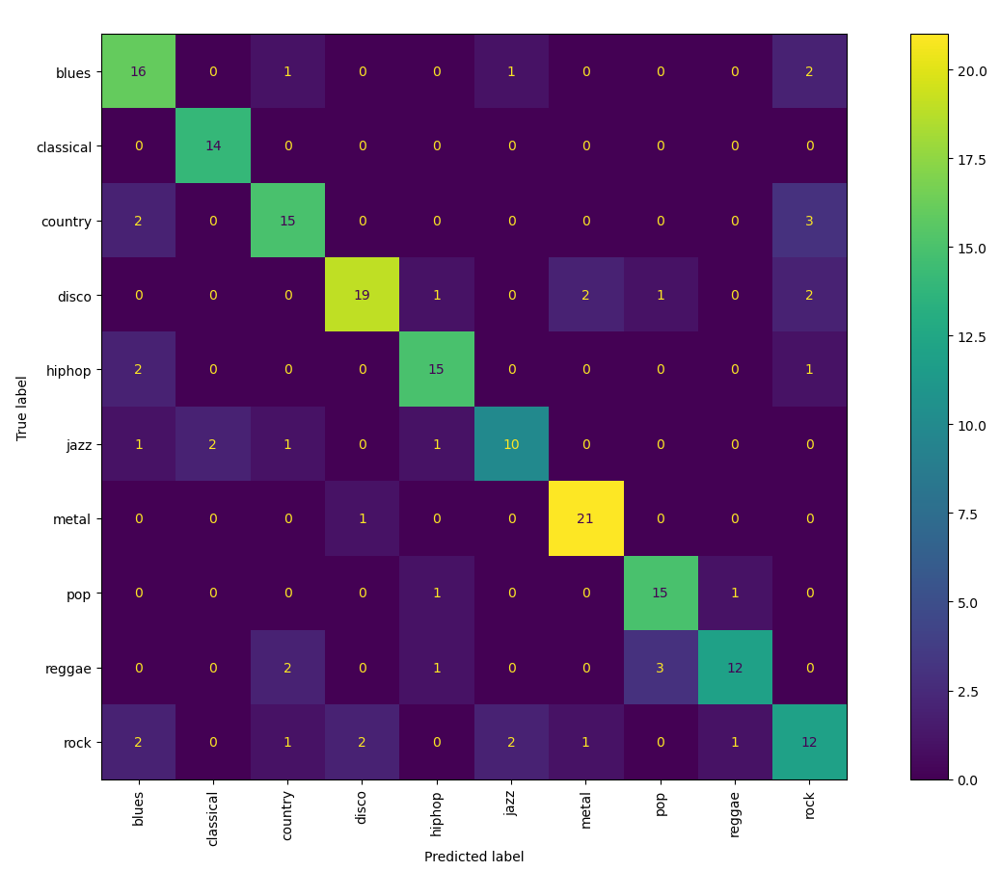

Our goal was to create a model which could classify the genre of an audio clip using a random forest model. In addition to building the model, we also wanted to explore the GTZAN dataset, including which features were most important and which genres are most commonly classified as others. Lastly, we also wanted to explore what the impact of removing repeated values in the GTZAN dataset had on model accuracy. Music classification, especially that done by computers, is a common problem in the music technology field and one that we were particarly interested in exploring. Also, the GTZAN dataset is incredibly popular, and we are interested in exploring some of the limitations and common issues found within it.
In order to accomplish our goal, we implemented a random forest model which we trained and tested on the GTZAN dataset. Then, from the results of this model, we are able to analyze the dataset using several metrics, including overall accuracy values, a confusion matrix, and feature importance. These metrics allow us to examine how well the model predicts each genre and which features are most beneficial when splitting in the forest. We tested each of these using the original GTZAN dataset and a modified version of the set that sought to mitigate the issues found within it to compare the difference.
Random Forest Implementation
We implemented a random forest model using the sklearn library in Python, specifically the RandomForestClassifier function. The classifier builds a collection of decision trees and trains each one on a random subset of the data rows and features. The final prediction of the random forest is made by aggregating the predictions of all the individual trees through a majority vote.
GTZAN Dataset
We used the GTZAN dataset for our model, which contains 1000 audio clips of 10 different genres. Each audio clip is 30 seconds long and has been preprocessed to extract 59 features, including chroma features, spectral centroids, harmony features, and MFCCs. However, the GTZAN dataset has several known issues, including repeated audio files. To address this, we also created a modified version of the dataset that removed repeated audio files specified in previous research.
The following table shows the distribution of genres that were removed:
| Jazz | Reggae | Metal | Pop | Disco | Hip-hop | Rock |
|---|---|---|---|---|---|---|
| 13 | 11 | 9 | 9 | 6 | 2 | 1 |
Training and Testing
We trained our model on 80% of the dataset and tested it on the remaining 20%, ensuring that the two sets were mutually exclusive using the split and train function from sklearn. Using this trained model, we made genre predictions on the test set using the predict function from sklearn.
Success Metrics
We then analyzed the results using several metrics, including overall accuracy values, a confusion matrix, and feature importance.
Accuracy:
To determine the success rate of our model, we compared the predicted labels to the actual labels using the accuracy_score function from sklearn. The accuracy_score function simply calculates the proportion of correct predictions to the total predictions made by the model, giving us a clear measure of how well our model is performing in classifying the genres of the audio clips.Confusion Matrix:
To further analyze the performance of our model, we created a confusion matrix using the confusion_matrix function from sklearn. A confusion matrix is a table that helps visualize where the model is making correct and incorrect predictions. The rows represent the actual genres, while the columns represent the predicted genres. Each cell in the matrix contains the count of predictions for that specific combination. Using the confusion matrix, we can identify which genres are being confused with others and gain information into the strengths and weaknesses of our model in classifying different genres.Feature Importance:
To determine which features were most important in our model, we used the feature_importances_ attribute on the trained random forest model. It calculates the importance of each feature based on how much it contributed to reducing impurity in decision trees. When a feature is used to split a node, the error reductions as a result of the split are multiplied by the number of samples directed to that node. These values are summed across all trees and normalized, which means that feature importances are relative to each other. The resulting score per feature indicate which ones had the greatest impact on the model's predictions.Original Dataset Evaluation
Accuracy Score: 75%
Feature Importance

Confusion Matrix

The random forest model trained on the original dataset had an accuracy of 75%. The confusion matrix shows that several genres, such as jazz and metal, are classified with relatively high accuracy, whereas genres like pop and rock show more frequent misclassifications. This shows that the model is better at distinguishing between certain genres than others, potentially due to similar acoustic features that may make it more difficult to differentiate between genres, or due to repeated audio files in the training set that may have made it easier for the model to learn and predict certain genres. The feature importance graph shows that perceptron variance, chroma stft mean, length, and ms mean were among some of the most important features.
Modified Dataset Evaluation
Accuracy Score: 78.42%
Feature Importance

Confusion Matrix

The random forest model trained on the modified dataset improved accuracy from 75% to 78.42%. The confusion matrix shows that the model improved significantly at classifying pop (after 9 files were removed), and slightly improved with classical, blues, and country (all of which were not duplicated genres). On the other hand, it shows that jazz decreased significantly, with 13 duplicates removed, and reggae decreased slightly, with 9 duplicates removed. This suggests that the model was incorrectly inflating the accuracy of jazz and reggae by overfitting to the duplicated audio files, and after removal, the model is able to better predict other genres. The feature importance graph shows that perceptron variance, chroma stft mean, length, and ms mean were still among some of the most important features.
Northwestern University
Professor Bryan Pardo
COMP_SCI 352: Machine Perception of Music & Audio